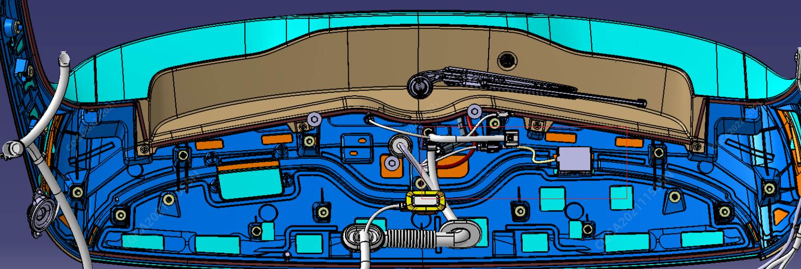
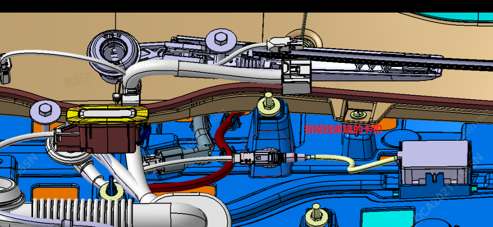
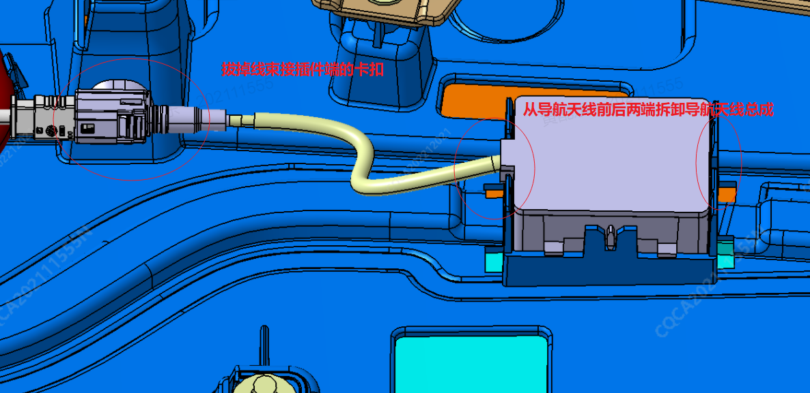

1. До установки спойлера зафиксировать навигационную антенну в монтажном пазу спойлера;
2. Закрепить фиксаторы жгута проводов в круглых отверстиях приливов спойлера;
Снятие1. Способом демонтировать узел спойлера

2. После завершения шага 1 извлечь жгут проводов крепления антенны из круглого отверстия прилива спойлера;

3. Отсоединить разъем навигационной антенны, демонтировать узел навигационной антенны с переднего и заднего торцов навигационной антенны;

4.完成步骤123之后，天线即可拆卸